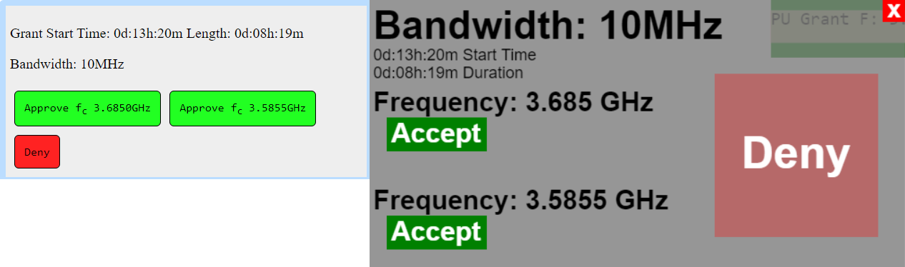
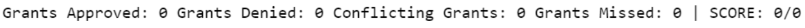
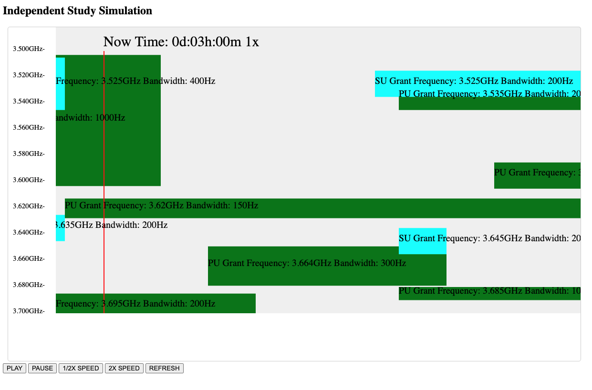

What is a SAS?
A SAS (Spectrum Access System) is a frequency coordinator that grants users access to the Citizens Broadband Radio Service (CBRS). There are 3 main tiers according to the FCC which include incumbent users, priority access, and general authorized access. Both the simulation and game show incumbent and priority as primary users while general authorized access users request grants to the system to use available space. The game takes place in the 3.5GHz range for radio devices.
The Game
The game has two main components: the list of grant requests and the active spectrum usage. Grant requests come in on the left and show the time they wish to start as well as their bands. Some grants have two possible frequencies; only one may be selected. You can also choose to deny the grant entirely thus removing it from the list. If you approve a grant that would interrupt or overlap the PU activity, the grant will remain red and the number of conflicting grants will increase.

Hovering
Hovering over an approve button will show when and where a grant request would take place if approved. If the grant is blue, it has no overlap. Red grants would conflict with current grants and PU activity. Grants that do not show up do not take place on the game's current visible time scale.
Scores and Commands
On the bottom of the game includes a list of scores. For every grant that is approved, denied, or missed scores will change. The objective is to put as many good grants into the system as possible with no overlap.
At the bottom of the screen includes selecting different speeds and seeds. You can pause the game, speed it up or slow it down. The speed of the game will show at the top of the screen with the current time and not affect your scores. There are two seeded events for a repeatable game and one game that is entirely random. If you leave the screen or change tabs, the game will automatically pause.

Simulator
The simulator is just that, a passive simulator. The simulator is pre-filled with PU activity and grant requests. A SAS filled with a higher capacity would be more common but is too difficult to manage as a game since these processes are normally automatic.
